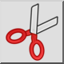
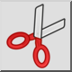
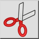
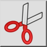

Wytnij
Pasek narzędziowy / ikona:
 

Menu: Edycja > Wytnij
Skrót: Ctrl+X (Mac: ⌘X)
Polecenia: cut
Jest to tłumaczenie automatyczne.
Pasek narzędziowy / ikona:
 

Menu: Edycja > Wytnij
Skrót: Ctrl+X (Mac: ⌘X)
Polecenia: cut
Narzędzie Cut działa jak narzędzie Kopiuj z tą różnicą, że wybrane elementy są usuwane z bieżącego rysunku po skopiowaniu do schowka